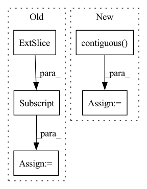

Pattern ID :7283

Before Change
// reshape back to per-pattern predictions
panel_predictions = flat_panels.contiguous().view(batch_size, self.max_pattern_size, self.max_panel_len, -1)
stitch_tags = panel_predictions[:, :, :, self.panel_elem_len:-1]
free_edge_class = panel_predictions[:, :, :, -1]
outlines = panel_predictions[:, :, :, :self.panel_elem_len]
rotations = flat_rotations.contiguous().view(batch_size, self.max_pattern_size, -1)
After Change
// reshape back to per-pattern predictions
panel_predictions = flat_panels.contiguous().view(batch_size, self.max_pattern_size, self.max_panel_len, -1)
stitch_predictions = flat_stitches.contiguous().view(batch_size, self.max_pattern_size, self.max_panel_len, -1)
stitch_tags = stitch_predictions[:, :, :, 1:]
free_edge_class = stitch_predictions[:, :, :, 0]
rotations = flat_rotations.contiguous().view(batch_size, self.max_pattern_size, -1)
translations = flat_translations.contiguous().view(batch_size, self.max_pattern_size, -1)
In pattern: SUPERPATTERN
Frequency: 4
Non-data size: 5
Instances
Fragment ID: 24345335
Project Name: maria-korosteleva/garment-pattern-estimation
Commit Name: ab34f7624fa249ca9c69cb154a6e1de81054ecc0
Time: 2021-04-08
Author: mariako@kaist.ac.kr
File Name: nn/nets.py
M Class Name: GarmentFullPattern3DDisentangle
N Class Name: GarmentFullPattern3DDisentangle
M Method Name: forward_decode(2)
N Method Name: forward_decode(2)
M Parent Class: GarmentFullPattern3D
N Parent Class: GarmentFullPattern3D
M File Name: nn/nets.py
N File Name: nn/nets.py
M Start Line: 637
M End Line: 656
N Start Line: 641
N End Line: 671
'>
Before Change
datas = corpus["target_idx"] // b * max_len
targets = datas[:, 1:] // b*max_length-1
batch_size, seq_len = targets.size()
_, feature_array, goal_array, leak_out_array = self.leakgan_forward(targets, dis, if_sample=False,
no_log=False, start_letter=self.start_idx)
After Change
// Worker loss
work_nll_loss = self.worker_nll_loss(targets, leak_out_array) // batch_size * seq_len
work_nll_loss = work_nll_loss.contiguous().reshape((batch_size, seq_len))
work_nll_loss = torch.sum(work_nll_loss, dim=1) // bs
worker_loss = torch.mean(work_nll_loss)
'>
Fragment ID: 24345342
Project Name: rucaibox/textbox
Commit Name: f78c75cd5c890e60a063e95617768f9402a1d553
Time: 2020-12-14
Author: 1318829605@qq.com
File Name: textbox/module/Generator/LeakGANGenerator.py
M Class Name: LeakGANGenerator
N Class Name: LeakGANGenerator
M Method Name: calculate_loss(3)
N Method Name: calculate_loss(3)
M Parent Class: UnconditionalGenerator
N Parent Class: UnconditionalGenerator
M File Name: textbox/module/Generator/LeakGANGenerator.py
N File Name: textbox/module/Generator/LeakGANGenerator.py
M Start Line: 92
M End Line: 101
N Start Line: 91
N End Line: 95
'>
Before Change
// reshape to per-pattern predictions
panel_predictions = flat_panels.contiguous().view(batch_size, self.max_pattern_size, self.max_panel_len, -1)
stitch_tags = panel_predictions[:, :, :, self.panel_elem_len:-1]
free_edge_class = panel_predictions[:, :, :, -1]
outlines = panel_predictions[:, :, :, :self.panel_elem_len]
rotations = flat_rotations.contiguous().view(batch_size, self.max_pattern_size, -1)
After Change
// outlines = panel_predictions[:, :, :, :self.panel_elem_len]
outlines = panel_predictions
// stitch info
stitch_tags_full = flat_stitch_tags.contiguous().view(batch_size, self.max_pattern_size, self.max_panel_len, -1)
stitch_tags = stitch_tags_full[:, :, :, :-1]
free_edge_class = stitch_tags_full[:, :, :, -1]
'>
Fragment ID: 24345310
Project Name: maria-korosteleva/garment-pattern-estimation
Commit Name: d714511e79252f3df169fce684249afe4914522a
Time: 2020-11-19
Author: mariako@kaist.ac.kr
File Name: nn/nets.py
M Class Name: GarmentFullPattern3D
N Class Name: GarmentFullPattern3D
M Method Name: forward(2)
N Method Name: forward(2)
M Parent Class: BaseModule
N Parent Class: BaseModule
M File Name: nn/nets.py
N File Name: nn/nets.py
M Start Line: 464
M End Line: 467
N Start Line: 455
N End Line: 482
'>
Before Change
datas = corpus["target_idx"] // b * max_len
targets = datas[:, 1:] // b*max_length-1
batch_size, seq_len = targets.size()
_, feature_array, goal_array, leak_out_array = self.leakgan_forward(targets, dis, if_sample=False,
no_log=False, start_letter=self.start_idx)
After Change
// Worker loss
work_nll_loss = self.worker_nll_loss(targets, leak_out_array) // batch_size * seq_len
work_nll_loss = work_nll_loss.contiguous().reshape((batch_size, seq_len))
work_nll_loss = torch.sum(work_nll_loss, dim=1) // bs
worker_loss = torch.mean(work_nll_loss)
'>
Fragment ID: 24345308
Project Name: rucaibox/textbox
Commit Name: 9b5a6ec4e4a248b42892f4a8b7efc8a9a25630f7
Time: 2020-12-14
Author: 1318829605@qq.com
File Name: textbox/module/Generator/LeakGANGenerator.py
M Class Name: LeakGANGenerator
N Class Name: LeakGANGenerator
M Method Name: calculate_loss(3)
N Method Name: calculate_loss(3)
M Parent Class: UnconditionalGenerator
N Parent Class: UnconditionalGenerator
M File Name: textbox/module/Generator/LeakGANGenerator.py
N File Name: textbox/module/Generator/LeakGANGenerator.py
M Start Line: 92
M End Line: 101
N Start Line: 91
N End Line: 95